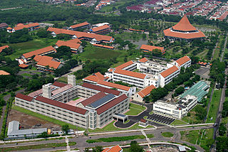

POLITEKNIK ELEKTRONIKA NEGERI SURABAYA
Politeknik Elektronika Negeri Surabaya (PENS) atau Electronic Engineering Polytechnic Institute of Surabaya (EEPIS) adalah perguruan tinggi negeri yang terdapat di Kota Surabaya, Provinsi Jawa Timur, Indonesia. Politeknik Elektronika Negeri Surabaya secara resmi berdiri sejak tahun 1988. Sebagai sebuah perguruan tinggi politeknik, PENS menyelenggarakan pendidikan vokasi / terapan yang lebih banyak berorientasi pada praktik ketimbang teori. PENS adalah satu-satunya politeknik yang mengkhususkan diri pada bidang teknik elektro.
Politeknik ini dikenal dengan tim robotiknya, politeknik ini juga merupakan salah satu politeknik terbaik di Indonesia menempati peringkat 1 di deretan politeknik se-Indonesia, dan menempati peringkat 20 di deretan perguruan tinggi se-Indonesia. Politeknik ini merupakam politeknik pertama yang menyelenggarakan program studi megister terapan di Indonesia. Politeknik ini menyelenggarakan 12 program sarjana terapan, 10 program studi D-III, 2 program studi megister terapan
Program studi sarjana terapan yang terdapat di pens antara lain, teknik elektronika, teknik komputer, teknik informatika, teknik telekomunikasi, teknik elektro industri, teknik mekatronika, sistem pembangkit energi, teknologi game, teknologi rekayasa multimedia, teknologi rekayasa internet, data sains, sedangkan untuk program studi d-3 tidak jauh berbeda dengan program studi sarjana terapan. Selain dikampus utama surabaya, pens juga memiliki program studi diluar kampus utama, yaitu, kampus sumenep dan lamongan.